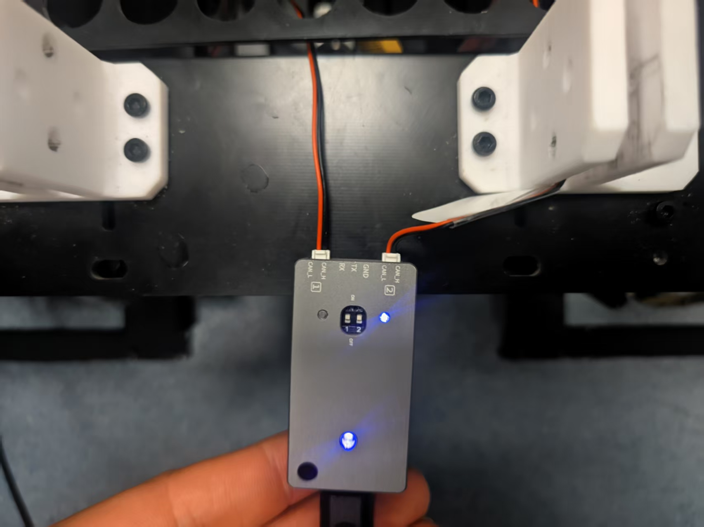

项目简介：此项目用于robomaster26赛季工程机器人七轴机械臂控制。由于项目时间紧迫和技术方案有限，最终采用了纯上位机控制加上VR遥操的方案落地
github链接：https://github.com/BenmaoNeko/Engineer_Moveit_VR
演示视频：https://www.bilibili.com/video/BV16hGa6sEhW
项目结构
Engineer_Moveit_VR/
├── src/ # ROS2 工作空间核心源码，负责机械臂建模、规划、控制和底盘通信
│ ├── arm_description/ # 机械臂 URDF/Xacro 模型、关节定义、连杆网格和动力学参数
│ ├── arm_moveit_config/ # MoveIt 配置包，包含规划组、SRDF、控制器配置、RViz 和启动文件
│ ├── arm_hardware_interface/ # ros2_control 硬件接口，将关节轨迹转换为 SocketCAN/DM 电机控制命令
│ ├── arm_script/ # 上位机控制脚本，包含 VR 遥操、冗余 IK、Servo 启动和实机联调入口
│ ├── moveit_servo/ # MoveIt Servo 实时伺服控制模块，用于接收 Twist/JointJog 并输出轨迹
│ ├── RCIA_engineer_chassis/ # 工程机器人底盘控制包，负责底盘 CAN 通信、速度控制和 ROS2 接口
│ ├── gripper/ # 末端夹爪模型和相关配置，用于机械臂末端执行器建模与显示
│ └── aruco_teleop/ # ArUco 视觉遥操作功能包，接收相机识别结果并接入机械臂控制链路
├── arUco/ # ArUco 和深度相机测试工程，包含相机读取、标记识别和视觉遥操作验证
│ ├── 深度相机_test/ # ROS2 深度相机测试包，用于相机数据读取、Aruco 检测和调试验证
│ └── aruco_teleop_integration_guide.md # ArUco 遥操作接入 MoveIt Servo 的集成说明
├── pico4/ # Pico 4/OpenXR 位姿接收脚本，将 VR 手柄位姿转换为 ROS2 控制输入
├── OpenXR_Demos/ # Android/OpenXR 端示例工程，用于采集 VR 设备位姿和手柄输入
├── UART/ # 串口通信协议封装，包含 UART 设备抽象、收发管理和协议解析示例
├── tip/ # 本地调试经验记录，包含 VR 冗余控制、实机调参和问题排查笔记
├── docs/ # 项目分析、计划和报告类文档，记录控制链路设计与阶段总结
├── 分析文档/ # SocketCAN、达妙电机、ros2_control、手眼标定等专题分析资料
├── test_controller.sh # 控制器测试脚本，用于快速检查 ROS2 控制器加载和运行状态
├── .gitignore # Git 忽略规则，排除 build、install、log、缓存和无关实验输出
└── README.md # 仓库说明文件，用于记录项目目标、运行方式和主要模块说明我们来一步步拆解这些部分
首先第一部分，也是整个项目的基础
URDF
URDF是什么 可以理解成让整个系统知道自己需要需要对哪些东西作用，是底盘还是机械臂，如果是机械臂的话，这个机械臂是怎么样一个构型，有几个关节，每个关节怎么链接，也就是可以理解成机械臂的“结构身份证”。它告诉 ROS：
- 有哪些零件，也就是
link。 - 零件之间怎么连接，也就是
joint。 - 每个关节绕哪个轴转，也就是
axis。 - 每个关节能转多少，也就是
limit。 - 每个零件长什么样，也就是
visual mesh。 - 每个零件碰撞体是什么，也就是
collision mesh。 - 每个零件质量、惯量是多少，也就是
inertial。
这些urdf文件在本项目在
src/arm_description/urdf/arm_description.xacro
src/arm_description/config/arm_dynamics.xacro
src/arm_description/meshes/总的来说就是，定义这个机器人有多少关节，有多少LINK，每个关节是什么转动方式，每个转动范围是多少，每个link有多重等等
那怎么看这些文件是怎么定义的呢？
比如 arm_description.xacro 里定义了 base_link、Link1 等机械结构，并引用 STL 模型：
<link name="base_link">
<visual>
<geometry>
<mesh filename="package://arm_description/meshes/visual/base_link.stl" />
</geometry>
</visual>
<collision>
<geometry>
<mesh filename="package://arm_description/meshes/collison/base_link.stl" />
</geometry>
</collision>
</link>第一个关节 Joint1 连接 base_link 和 Link1，并指定了旋转轴和限位：
<joint name="Joint1" type="revolute"> ##这个j1就是我的旋转关节
<parent link="base_link" /> ##所对应的父link就是base_link
<child link="Link1" /> ##所对应的子link就是Link1
<axis xyz="0 0 -1" /> ##旋转方式
<limit lower="-2.355" upper="2.355" effort="20" velocity="3" /> ##限位定义
</joint>这些含义是啥呢？
| 字段 | 含义 |
|---|---|
parent | 父连杆 |
child | 子连杆 |
axis | 关节旋转轴 |
lower / upper | 关节最小、最大角度 |
effort | 力矩/力限制，供规划和仿真参考 |
velocity | 最大速度，单位通常是 rad/s |
这边就是配置过程，定义了j1怎么链接的，和哪些link链接，怎么转的，转动方式是啥，转动范围是什么。以此类推
但是这里会发现我们是怎么得到这些的呢。这些机械结构都是由机械进行设计并定义的，从sw导出即可，但是这里还有一个疑问，为什么用 Xacro，而不是只写一个 URDF？
为什么用 Xacro
纯 URDF 可以直接描述机器人，但项目一复杂就会变得很难维护。机械臂项目里不仅有几何结构，还有：
- 质量和惯量参数；
- fake ros2_control 配置；
- real CAN ros2_control 配置；
- 初始关节位置；
- 夹爪、末端 TCP；
- MoveIt 使用的模型版本。
这些结构紧密相连，结构清晰，对于这种我们就习惯与使用一种解释性语言进行描述，就可以做到容易维护并方便调用。还有一点就是，我们不止一个地方会用到urdf,比如rviz,moveit severo等都会调用urdf,但是如果当你只是改了rviz中的urdf文件，然后在仿真中表现没啥问题，但是却忘记修改其他地方的，就会出现很多问题，所以使用一个结构性语言相当的重要，每个部分都统一调用这个Xacro文件即可。
现在我们有了可以描述机械结构的文件，有了可以统一调用的接口，但是下一步我们应该怎么知道此刻机械臂的状态呢？
robot_state_publisher 和 TF
上面说的只是基础，是底座，本是可不会直接让车动起来，我们的ROS2系统还需要知道： j1转动了多少，现在相对与零点什么位置 末端 planning_tip_link 在哪里？
那这些在我们的系统当中是怎么做到的呢？ 这一步由 /joint_states、robot_state_publisher 和 TF 完成：
ros2_control_node
-> 读取 fake hardware 或 real hardware 的关节状态 //ros2_control
-> joint_state_broadcaster 发布 /joint_states
-> robot_state_publisher 订阅 /joint_states
-> 根据 URDF 计算 TF 树 ##TF：坐标转化系统/joint_states：叫做关节状态话题 会持续告诉系统每关节每刻的位置，速度，力矩等信息
然后是robot_state_publisher：机器人状态发布器 它读取URDF,知道每个link和joint怎么链接，然后订阅/joint_states，就能算出来每个link当前在空间的位置。
流程就可以理解成：
arm_description_full_can.urdf.xacro
-> xacro 展开
-> robot_description 参数
-> robot_state_publisher
<- /joint_states
-> TF: base_link 到 planning_tip_link简单来说就是，有一负责读取当前的每个关节的节点，有一个负责知道每个关节之间的关系的节点。然后就能算出来每个link之间怎么变换的，处于什么位置，这样就能得到机械臂的姿态了
MoveIt
前面已经通过 URDF/Xacro、/joint_states、robot_state_publisher 和 TF 解决了两个基础问题：
- 机械臂是什么结构；
- 机械臂当前在哪里。
接下来才轮到 MoveIt。MoveIt 的核心前提是：它必须同时拿到机器人模型和当前状态，才能进行规划、碰撞检测和运动解算。
| MoveIt 需要的信息 | 来源 | 作用 |
|---|---|---|
| 机械臂结构 | robot_description，也就是 URDF/Xacro 展开结果 | 知道有哪些 link / joint，以及它们怎么连接 |
| 当前关节状态 | /joint_states | 知道每个关节此刻的角度、速度等状态 |
| 空间坐标关系 | TF | 知道 base_link 到末端 link 的空间变换 |
FK 和 IK
在理解 MoveIt 之前，需要先分清两个概念：正解 FK 和 逆解 IK。
正解 FK
FK 的英文是 Forward Kinematics，也就是正向运动学。
它解决的问题是：
已知每个关节角度，求机械臂末端在空间中的位置和姿态。
例如当前 7 个关节角度如下：
| 关节 | 示例角度 |
|---|---|
| J1 | 10° |
| J2 | 20° |
| J3 | -30° |
| J4 | 45° |
| J5 | 10° |
| J6 | 15° |
| J7 | 0° |
结合机械臂的连杆长度、关节方向和安装关系，就可以算出末端执行器的位姿：
| 输出 | 含义 |
|---|---|
x, y, z | 末端位置 |
roll, pitch, yaw 或四元数 | 末端姿态 |
所以 FK 可以总结成：
关节角度 -> 末端位姿逆解 IK
IK 的英文是 Inverse Kinematics，也就是逆向运动学。
它解决的问题正好反过来：
已知希望末端到达的位置和姿态，求每个关节应该转多少。
末端目标位姿 -> 关节角度IK 比 FK 难很多。FK 往往是给定关节角后得到一个确定末端位姿；但 IK 可能存在多解、无解、奇异位形和关节限位问题。
拿这个 VR 遥操项目举例：我希望机械臂末端向前移动 10cm。系统不能直接给电机发送“末端向前 10cm”，因为电机只认识关节命令。中间必须通过 IK 把末端目标转换成每个关节应该到达的角度或速度。
MoveIt 做什么
MoveIt 可以理解成机械臂运动规划的大脑，主要负责：
- 读取机器人模型；
- 读取当前关节状态；
- 知道哪些关节属于机械臂规划组；
- 知道哪个 link 是末端；
- 做 FK / IK；
- 做碰撞检测；
- 做路径规划；
- 生成关节轨迹；
- 把轨迹发给控制器。
对应到配置上，MoveIt 需要明确这些东西：
| 配置项 | 示例 | 作用 |
|---|---|---|
| 规划组 | arm | 哪些关节组成机械臂 |
| 末端 link | planning_tip_link | 末端执行器从哪里算 |
| base link | base_link | 从哪个坐标系开始算 |
| 控制器 | /arm_controller/joint_trajectory | 规划出的轨迹发到哪里 |
| 碰撞模型 | SRDF / collision matrix | 哪些 link 需要避碰，哪些可以忽略 |
| IK 插件 | KDL / TRAC-IK / 自定义插件 | 怎么把末端位姿转换成关节解 |
这些问题当然可以自己写代码解决，但工程量会非常大。所以在项目里，MoveIt 负责运动学、规划和碰撞检测，我只需要把模型、规划组、控制器和实机接口配置正确。
MoveIt 和 MoveIt Servo 的区别
普通 MoveIt 更适合处理“给定一个目标，然后规划一条完整路径”的任务。
MoveIt Servo 更适合处理“连续、小步、低延迟”的实时控制任务。
| 对比项 | 普通 MoveIt | MoveIt Servo |
|---|---|---|
| 输入 | 目标位姿或目标关节状态 | 持续的小速度指令 |
| 输出 | 一条完整轨迹 | 连续的关节速度 / 轨迹点 |
| 典型用途 | 点到点规划、避障路径 | VR 遥操、实时微调、手柄控制 |
| 控制特点 | 一次规划，按轨迹执行 | 边输入、边计算、边输出 |
对于 VR 遥操来说，手柄输入是连续变化的。如果每一次都走完整路径规划，延迟和体验都不合适。因此本项目更适合使用 MoveIt Servo。
解析解、数值迭代和 Jacobian
IK 的求解方法大致可以分成两类：
| 方法 | 含义 | 适用情况 |
|---|---|---|
| 解析解 | 直接推公式，一步算出关节角 | 结构简单、自由度固定、能推导闭式解的机械臂 |
| 数值迭代 | 不断根据误差修正关节角 | 结构复杂、冗余自由度、目标持续变化的机械臂 |
本项目是七轴机械臂，又是 VR 连续遥操，不是固定目标点控制。因此更适合使用数值 IK。
MoveIt Servo 常见的核心思想不是“一次求完整 IK”，而是用微分关系把末端速度转换成关节速度。这里就会用到 Jacobian，也就是雅可比矩阵。
末端速度 = J(q) × 关节速度
x_dot = J(q) × q_dot| 符号 | 含义 |
|---|---|
x_dot | 末端速度 |
q_dot | 关节速度 |
J(q) | 当前姿态下的雅可比矩阵 |
Servo 实际需要的是反过来的关系：
已知末端想怎么动 -> 求关节应该怎么动
q_dot = J 的逆 × x_dot但机械臂经常不是刚好可逆。尤其七轴机械臂是冗余机械臂，所以通常会使用：
- 伪逆；
- 阻尼伪逆；
- 加权阻尼伪逆；
- 零空间优化。
这部分就是七轴机械臂 Servo 解算的核心。
小结
| 模块 | 解决的问题 |
|---|---|
| URDF / Xacro | 描述机械臂结构 |
/joint_states | 提供当前关节状态 |
robot_state_publisher / TF | 算出各 link 的空间关系 |
| MoveIt | 做运动学、碰撞检测和路径规划 |
| MoveIt Servo | 把连续末端速度输入转换成连续关节控制输出 |
到这里，我们已经知道机械臂是什么构型，也能根据当前关节状态得到机械臂位姿。假设现在给末端一个目标位置，MoveIt / MoveIt Servo 已经可以算出每个关节应该怎么运动。
但是新的问题出现了：MoveIt Servo 算出来的是 ROS 里的关节角度、关节速度或轨迹点；底层真正执行动作的是一个个电机。电机并不知道自己在 ROS 里对应哪个 joint，也不知道 MoveIt 里的 Joint1、Joint2 是什么意思。
所以接下来就需要一个“翻译器”，也就是 ros2_control。
ros2_control
ros2_control 真正的作用就是将算法层和硬件层隔离开来 上面我们的所有东西都是算法应用层。但是还有底层硬件层： hardware_interface SocketCAN DM 电机
刚刚我们说了电机本身不知道自己是谁，比如dm的电机就只认识 CAN ID 目标位置 目标速度 kp kd tau 控制模式 这些东西。
所以如果没有这个中间层，我们在写算法的时候就要考虑这些硬件层面的东西了 所以我们需要在这里添加这个中间层
那ros2_control中有哪些需要我们关注的呢。重点就是controller 和 hardware_interface
controller 是负责按照 ROS 控制接口产生 joint 命令 hardware_interface是负责把 joint 命令翻译成真实电机命令
简单来说就是一个负责将上层命令和下层电子之间进行对齐。一个是负责吧这写命令真正转化成电机听的懂的can信号
那ros2_control内部也维护着一个系统。 read() 从电机读取当前位置、速度、状态
update() controller 根据目标轨迹计算当前时刻应该给每个 joint 的命令
write() hardware_interface 把 joint 命令转换成 CAN 帧发给电机
这样去形成一个闭环
然后就是joint_state_broadcaster 真实运行的系统是需要进行反馈的。那这个反馈怎么来的呢，就是通过joint_state_broadcaster，将j1转到了呢，j2现在的速度是多少进行发布成/joint_states 还记得一开始的robot_state_publisher吗，就是那个实时读取每个关节状态的节点，joint_states就是从ros2_control层拿到的
我的项目当中的流程就是这样
MoveIt Servo -> /arm_controller/joint_trajectory -> joint_trajectory_controller -> ros2_control command interface -> ArmFullDmCanSystem hardware_interface -> SocketCAN can0 / can1 -> DM 电机
每个关节还绑定了 DM 电机参数：
<joint name="Joint1">
<param name="esc_id">1</param>
<param name="master_id">1</param>
<param name="can_bus">0</param>
<param name="mit_kp">80</param>
<param name="mit_kd">5</param>
<param name="joint_direction">-1.0</param>
<command_interface name="position"/>
<command_interface name="velocity"/>
<state_interface name="position"/>
<state_interface name="velocity"/>
</joint>这里的含义是：
| 字段 | 含义 |
|---|---|
esc_id | 电机控制 ID |
master_id | 反馈帧 ID |
can_bus | 使用 can0 还是 can1 |
mit_kp / mit_kd | DM MIT 模式的位置增益和阻尼 |
joint_direction | 电机角度到 ROS 关节角的方向映射 |
command_interface | 上层能给它发什么命令 |
state_interface | 硬件反馈什么状态 |
总结一下就是： MoveIt 解决“关节应该怎么动”； ros2_control 解决“关节命令怎么被控制器管理”； hardware_interface 解决“关节命令怎么变成真实电机 CAN 命令”。
到此为止我们已经可以让实际的机械臂动起来了。完成了上层解算，中间翻译，下层执行的闭环。 那我们还缺少什么。那就是我们的上层输入了，机械臂到底按照什么形式进行移动？使用什么操作方式进行移动？我使用过三种方式，手柄控制，aruco6dof输入控制，vr控制。后来觉得使用vr进行移动是非常好的操作方式。
vr遥操
使用vr遥操的整个系统流程更适合 moveit servo和数值迭代方式，应此我们整个项目都是按照这个方向做的框架。
使用的硬件是：Pico4
数据流为：
Pico 4 (OpenXR App)
-> UDP
-> pico4_pose_ros2.py
-> /pico4/right_controller
-> /pico4/right_joy
-> vr_servo_node
-> /delta_twist_cmds 或 /delta_joint_cmds
-> MoveIt Servo
-> /arm_controller/joint_trajectory
-> 硬件控制逻辑是：
- 右手扳机按住：启用 6DoF 跟踪；
- 松开扳机：停止；
- 手柄位姿变化：映射成 TCP 目标位姿；
- A/B/X/Y：调用 MoveGroup 的预设姿态；
- Menu：急停或重置 Servo；
- 检测超时、跳变、Servo 硬停状态时发送零速度。
这里最关键的思想是绑定：
按下扳机那一刻：
记录当前 VR 手柄位置
记录当前 TCP 位置
后面计算手柄相对位移
再让 TCP 跟着这个相对位移走整个移动方式都是增量控制，即安全又更加的灵活，更适合人手的操控 代码里面的 initializePoseBinding() 会读取当前 TCP 位姿：
const Eigen::Isometry3d& tcp_transform =
state.getGlobalLinkTransform(servo_parameters_->ee_frame_name);这里的 ee_frame_name 在 Servo 配置里就是 planning_tip_link。所以 VR 控制本质上是在控制：
base_link -> planning_tip_link这个就是映射过程，但是前提是URDF、TF、robot_state_publisher 必须先正确。
以及vr手柄的数据是通过udp协议进行的。仅仅测试使用
这里进行解释一下，我真正想要实现的效果是，将机械臂的末端位姿直接映射到我的vr手柄上，我们不用在意真实的关节到底怎么进行移动的，只要我的末端位姿和我想要进行移动形式相同即可。但是由于七轴的多解问题，导致实际会出现很多的问题，所以进行了很多优化操作比如权重ik解算，双pitch解算居中等。有条件还是建议在机械上面多花一些功夫比较好
出现过的问题
机械臂是七轴的，但是末端位姿输入的是6维 因为有冗余自由度。所以出现过
- 腕部 J5/J6 乱摆；
- J3 容易被分配到不希望的运动；
- 接近关节限位；
- RViz 看起来还行，但实机出现抖动或下坠趋势。
所以本项目的 IK 不是完全依赖 MoveIt 默认求解器，而是在 VR 实时遥操作中加入了自己的 7 轴冗余分配逻辑 VR 节点中，冗余 IK 路径是：
linear_vel / angular_vel
-> getJacobian(jmg_)
-> solveRedundantIk()
-> normalizeToUnitless()
-> JointJog
-> MoveIt Servo纯上位机控制
由于本工程全部都是运行在上位机上面的，完全没有下位机的参与。 使用的硬件是 dm usb to can 双口模块

整个机械臂的接线就是使用这个模块。八个电机每个口进行一拖四。 建议后面跑fdcan,一拖四其实感觉挺极限的
这里说的 USB-to-CAN，本质上是 Linux 系统里已经配置好的 SocketCAN 网卡：
sudo ip link set can0 type can bitrate 1000000
sudo ip link set can0 up如果有两路 CAN，就还需要配置 can1。
DmCanTransport 用 Linux CAN socket 打开接口：
socket(PF_CAN, SOCK_RAW, CAN_RAW)
ioctl(socket_fd_, SIOCGIFINDEX, &ifr)
bind(socket_fd_, ...)发送 DM 电机 MIT 命令时，会把浮点位置、速度、KP、KD、力矩压缩到 8 字节 CAN 数据：
data[0] = (p_int >> 8) & 0xFF;
data[1] = p_int & 0xFF;
data[2] = (v_int >> 4) & 0xFF;
data[3] = ((v_int & 0x0F) << 4) | ((kp_int >> 8) & 0x0F);
...
send_frame(can_id, data, 8);写入阶段 ArmFullDmCanSystem::write() 会：
- 根据当前关节状态计算重力补偿；
- 把 ROS 关节命令转换成电机命令；
- 限制位置、速度、力矩范围；
- 对每个电机调用
send_mit()； - 通过 SocketCAN 发出 CAN 帧。
以此形成一个闭环
结语
本技术报告其实更像是对整个项目的梳理，希望可以从中有所启发